1.什么是JSP Java Server Pages ： Java服务器端页面，也和Servlet一样，用于动态Web技术！
最大的特点：
写JSP就像在写HTML
区别：
HTML只给用户提供静态的数据
JSP页面中可以嵌入JAVA代码，为用户提供动态数据；
2.JSP原理 思路：JSP到底怎么执行的！
代码层面没有任何问题
服务器内部工作
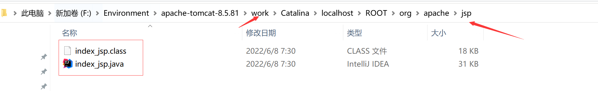
IDEA中使用Tomcat的会在IDEA的tomcat中生产一个work目录
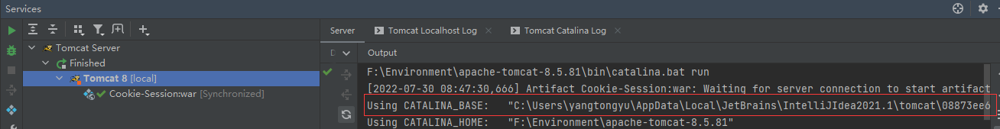
发现页面转变成了Java程序！
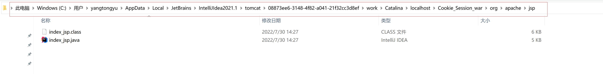
浏览器向服务器发送请求，不管访问什么资源，其实都是在访问Servlet！
JSP最终也会被转换成为一个Java类！
index.jsp
1 2 3 4 5 <html> <body> <h2>Hello World!</h2> </body> </html>
index_jsp.java
1 2 3 4 5 6 7 8 9 10 11 12 13 14 15 16 17 18 19 20 21 22 23 24 25 26 27 28 29 30 31 32 33 34 35 36 37 38 39 40 41 42 43 44 45 46 47 48 49 50 51 52 53 54 55 56 57 58 59 60 61 62 63 64 65 66 67 68 69 70 71 72 73 74 75 76 77 78 79 80 81 82 83 84 85 86 87 88 89 90 91 92 93 94 95 96 97 98 99 100 101 102 103 104 105 106 107 108 109 110 111 112 113 114 115 116 117 118 119 120 121 122 123 124 125 126 127 128 129 130 131 132 package org.apache.jsp;import javax.servlet.*;import javax.servlet.http.*;import javax.servlet.jsp.*;public final class index_jsp extends org .apache.jasper.runtime.HttpJspBase implements org .apache.jasper.runtime.JspSourceDependent, org.apache.jasper.runtime.JspSourceImports { private static final javax.servlet.jsp.JspFactory _jspxFactory = javax.servlet.jsp.JspFactory.getDefaultFactory(); private static java.util.Map<java.lang.String,java.lang.Long> _jspx_dependants; private static final java.util.Set<java.lang.String> _jspx_imports_packages; private static final java.util.Set<java.lang.String> _jspx_imports_classes; static { _jspx_imports_packages = new java .util.HashSet<>(); _jspx_imports_packages.add("javax.servlet" ); _jspx_imports_packages.add("javax.servlet.http" ); _jspx_imports_packages.add("javax.servlet.jsp" ); _jspx_imports_classes = null ; } private volatile javax.el.ExpressionFactory _el_expressionfactory; private volatile org.apache.tomcat.InstanceManager _jsp_instancemanager; public java.util.Map<java.lang.String,java.lang.Long> getDependants() { return _jspx_dependants; } public java.util.Set<java.lang.String> getPackageImports() { return _jspx_imports_packages; } public java.util.Set<java.lang.String> getClassImports() { return _jspx_imports_classes; } public javax.el.ExpressionFactory _jsp_getExpressionFactory () { if (_el_expressionfactory == null ) { synchronized (this ) { if (_el_expressionfactory == null ) { _el_expressionfactory = _jspxFactory.getJspApplicationContext(getServletConfig().getServletContext()).getExpressionFactory(); } } } return _el_expressionfactory; } public org.apache.tomcat.InstanceManager _jsp_getInstanceManager () { if (_jsp_instancemanager == null ) { synchronized (this ) { if (_jsp_instancemanager == null ) { _jsp_instancemanager = org.apache.jasper.runtime.InstanceManagerFactory.getInstanceManager(getServletConfig()); } } } return _jsp_instancemanager; } public void _jspInit () { } public void _jspDestroy () { } public void _jspService (final javax.servlet.http.HttpServletRequest request, final javax.servlet.http.HttpServletResponse response) throws java.io.IOException, javax.servlet.ServletException { final java.lang.String _jspx_method = request.getMethod(); if (!"GET" .equals(_jspx_method) && !"POST" .equals(_jspx_method) && !"HEAD" .equals(_jspx_method) && !javax.servlet.DispatcherType.ERROR.equals(request.getDispatcherType())) { response.sendError(HttpServletResponse.SC_METHOD_NOT_ALLOWED, "JSP 只允许 GET、POST 或 HEAD。Jasper 还允许 OPTIONS" ); return ; } final javax.servlet.jsp.PageContext pageContext; javax.servlet.http.HttpSession session = null ; final javax.servlet.ServletContext application; final javax.servlet.ServletConfig config; javax.servlet.jsp.JspWriter out = null ; final java.lang.Object page = this ; javax.servlet.jsp.JspWriter _jspx_out = null ; javax.servlet.jsp.PageContext _jspx_page_context = null ; try { response.setContentType("text/html" ); pageContext = _jspxFactory.getPageContext(this , request, response, null , true , 8192 , true ); _jspx_page_context = pageContext; application = pageContext.getServletContext(); config = pageContext.getServletConfig(); session = pageContext.getSession(); out = pageContext.getOut(); _jspx_out = out; out.write("<html>\n" ); out.write("<body>\n" ); out.write("<h2>Hello World!</h2>\n" ); out.write("</body>\n" ); out.write("</html>\n" ); } catch (java.lang.Throwable t) { if (!(t instanceof javax.servlet.jsp.SkipPageException)){ out = _jspx_out; if (out != null && out.getBufferSize() != 0 ) try { if (response.isCommitted()) { out.flush(); } else { out.clearBuffer(); } } catch (java.io.IOException e) {} if (_jspx_page_context != null ) _jspx_page_context.handlePageException(t); else throw new ServletException (t); } } finally { _jspxFactory.releasePageContext(_jspx_page_context); } } }
JSP 本质上就是一个Servlet
1 2 3 4 5 6 7 8 9 public void _jspInit () { } public void _jspDestroy () { } public void _jspService (.HttpServletRequest request,HttpServletResponse response)
2.1 判断请求 1 2 3 4 5 final java.lang.String _jspx_method = request.getMethod();if (!"GET" .equals(_jspx_method) && !"POST" .equals(_jspx_method) && !"HEAD" .equals(_jspx_method) && !javax.servlet.DispatcherType.ERROR.equals(request.getDispatcherType())) { response.sendError(HttpServletResponse.SC_METHOD_NOT_ALLOWED, "JSP 只允许 GET、POST 或 HEAD。Jasper 还允许 OPTIONS" ); return ; }
2.2 内置一些对象 1 2 3 4 5 6 7 8 final javax.servlet.jsp.PageContext pageContext; javax.servlet.http.HttpSession session = null ; final javax.servlet.ServletContext application; final javax.servlet.ServletConfig config; javax.servlet.jsp.JspWriter out = null ; final java.lang.Object page = this ; HttpServletRequest request HttpServletResponse response
2.3 输出页面前增加的代码 1 2 3 4 5 6 7 8 9 response.setContentType("text/html" ); pageContext = _jspxFactory.getPageContext(this , request, response, null , true , 8192 , true ); _jspx_page_context = pageContext; application = pageContext.getServletContext(); config = pageContext.getServletConfig(); session = pageContext.getSession(); out = pageContext.getOut(); _jspx_out = out;
2.4 以上的这些个对象我们可以在JSP页面中直接使用 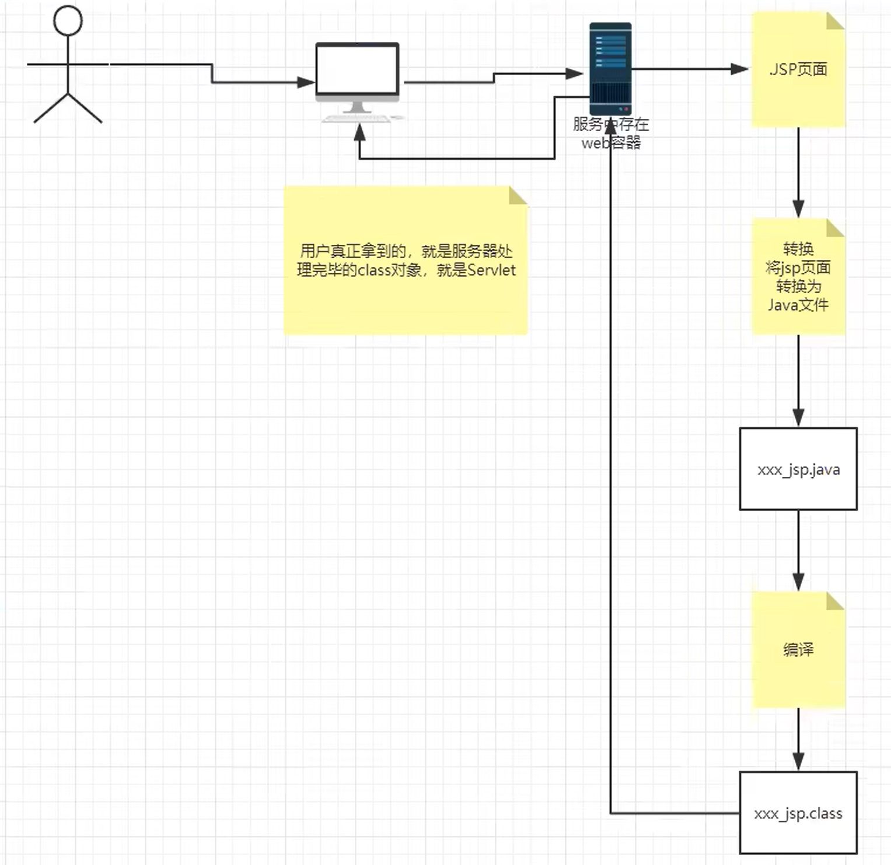
在JSP页面中；
只要是 JAVA代码就会原封不动的输出；
如果是HTML代码，就会被转换为：
1 out.write("<html>\r\n");
这样的格式，输出到前端！
3.JSP基础语法 任何语言都有自己的语法，JAVA中有,。 JSP 作为java技术的一种应用，它拥有一些自己扩充的语法（了解，知道即可！），Java所有语法都支持！
pom.xml
1 2 3 4 5 6 7 8 9 10 11 12 13 14 15 16 17 18 19 20 21 22 23 24 25 26 27 28 29 30 31 32 33 34 35 36 37 38 39 40 41 42 43 44 45 <?xml version="1.0" encoding="UTF-8" ?> <project xmlns ="http://maven.apache.org/POM/4.0.0" xmlns:xsi ="http://www.w3.org/2001/XMLSchema-instance" xsi:schemaLocation ="http://maven.apache.org/POM/4.0.0 http://maven.apache.org/xsd/maven-4.0.0.xsd" > <modelVersion > 4.0.0</modelVersion > <groupId > com.yang</groupId > <artifactId > javaweb-03-jsp</artifactId > <version > 1.0-SNAPSHOT</version > <properties > <maven.compiler.source > 8</maven.compiler.source > <maven.compiler.target > 8</maven.compiler.target > </properties > <dependencies > <dependency > <groupId > javax.servlet</groupId > <artifactId > servlet-api</artifactId > <version > 2.5</version > </dependency > <dependency > <groupId > javax.servlet.jsp</groupId > <artifactId > jsp-api</artifactId > <version > 2.2</version > </dependency > <dependency > <groupId > javax.servlet.jsp.jstl</groupId > <artifactId > jstl-api</artifactId > <version > 1.2</version > </dependency > <dependency > <groupId > taglibs</groupId > <artifactId > standard</artifactId > <version > 1.1.2</version > </dependency > </dependencies > </project >
3.1 JSP表达式 1 2 3 4 5 <%--JSP表达式 作用：用来将程序的输出，输出到客户端 --%> <%= 变量或者表达式%> <%= new java .util.Date()%>
3.2 jsp脚本片段 1 2 3 4 5 6 7 8 <%--jsp脚本片段--%> <% int sum = 0 ; for (int i = 1 ; i <=100 ; i++) { sum+=i; } out.println("<h1>Sum=" +sum+"</h1>" ); %>
3.3 脚本片段的再实现 1 2 3 4 5 6 7 8 9 10 11 12 13 14 15 16 17 18 19 20 <% int x = 10 ; out.println(x); %> <p>这是一个JSP文档</p> <% int y = 2 ; out.println(y); %> <hr> <%--在代码嵌入HTML元素--%> <% for (int i = 0 ; i < 5 ; i++) { %> <h1>Hello,World <%=i%> </h1> <% } %>
3.4 JSP声明 1 2 3 4 5 6 7 8 9 10 11 <%! static { System.out.println("Loading Servlet!" ); } private int globalVar = 0 ; public void kuang () { System.out.println("进入了方法Kuang！" ); } %>
JSP声明：会被编译到JSP生成Java的类中！其他的，就会被生成到_jspService方法中！
在JSP，嵌入Java代码即可！
1 2 3 4 5 <%%> <%=%> <%!%> <%--注释--%>
JSP的注释，不会在客户端显示，HTML就会！
1 2 3 <!--html--> <%--jsp--%>
index.jsp
1 2 3 4 5 6 7 8 9 10 11 12 13 14 15 16 17 18 19 20 21 22 23 24 25 26 27 28 29 30 31 32 33 34 35 36 37 38 39 40 41 42 43 44 45 46 47 48 49 50 51 52 53 54 55 56 57 58 59 60 61 62 63 <%-- Created by IntelliJ IDEA. User: *** Date: 2020 /12 /5 Time: 18 :30 To change this template use File | Settings | File Templates. --%> <%@ page contentType="text/html;charset=UTF-8" language="java" %> <html> <head> <title>$Title$</title> </head> <body> <%--JSP表达式 作用：用来将程序的输出，输出到客户端 <%= 变量或者表达式%> --%> <%= new java .util.Date()%> <%--jsp脚本片段--%> <% int sum = 0 ; for (int i = 1 ; i <=100 ; i++) { sum+=i; } out.println("<h1>Sum=" +sum+"</h1>" ); %> <% int x = 10 ; out.println(x); %> <p>这是一个JSP文档</p> <% int y = 2 ; out.println(y); %> <%--在代码嵌入HTML元素--%> <% for (int i = 0 ; i < 5 ; i++) { %> <h1>Hello,World <%=i%> </h1> <% } %> <%! static { System.out.println("Loading Servlet!" ); } private int globalVar = 0 ; public void yang () { System.out.println("进入了方法yang！" ); } %> </body> </html>
index_jsp.java
1 2 3 4 5 6 7 8 9 10 11 12 13 14 15 16 17 18 19 20 21 22 23 24 25 26 27 28 29 30 31 32 33 34 35 36 37 38 39 40 41 42 43 44 45 46 47 48 49 50 51 52 53 54 55 56 57 58 59 60 61 62 63 64 65 66 67 68 69 70 71 72 73 74 75 76 77 78 79 80 81 82 83 84 85 86 87 88 89 90 91 92 93 94 95 96 97 98 99 100 101 102 103 104 105 106 107 108 109 110 111 112 113 114 115 116 117 118 119 120 121 122 123 124 125 126 127 128 129 130 131 132 133 134 135 136 137 138 139 140 141 142 143 144 145 146 147 148 149 150 151 152 153 154 155 156 157 158 159 160 161 162 163 164 165 166 167 168 169 170 171 172 173 174 175 176 177 178 179 180 181 182 183 184 185 186 187 188 189 190 191 192 193 194 195 196 197 198 199 200 201 202 203 package org.apache.jsp;import javax.servlet.*;import javax.servlet.http.*;import javax.servlet.jsp.*;public final class index_jsp extends org .apache.jasper.runtime.HttpJspBase implements org .apache.jasper.runtime.JspSourceDependent, org.apache.jasper.runtime.JspSourceImports { static { System.out.println("Loading Servlet!" ); } private int globalVar = 0 ; public void yang () { System.out.println("进入了方法yang！" ); } private static final javax.servlet.jsp.JspFactory _jspxFactory = javax.servlet.jsp.JspFactory.getDefaultFactory(); private static java.util.Map<java.lang.String,java.lang.Long> _jspx_dependants; private static final java.util.Set<java.lang.String> _jspx_imports_packages; private static final java.util.Set<java.lang.String> _jspx_imports_classes; static { _jspx_imports_packages = new java .util.HashSet<>(); _jspx_imports_packages.add("javax.servlet" ); _jspx_imports_packages.add("javax.servlet.http" ); _jspx_imports_packages.add("javax.servlet.jsp" ); _jspx_imports_classes = null ; } private volatile javax.el.ExpressionFactory _el_expressionfactory; private volatile org.apache.tomcat.InstanceManager _jsp_instancemanager; public java.util.Map<java.lang.String,java.lang.Long> getDependants() { return _jspx_dependants; } public java.util.Set<java.lang.String> getPackageImports() { return _jspx_imports_packages; } public java.util.Set<java.lang.String> getClassImports() { return _jspx_imports_classes; } public javax.el.ExpressionFactory _jsp_getExpressionFactory () { if (_el_expressionfactory == null ) { synchronized (this ) { if (_el_expressionfactory == null ) { _el_expressionfactory = _jspxFactory.getJspApplicationContext(getServletConfig().getServletContext()).getExpressionFactory(); } } } return _el_expressionfactory; } public org.apache.tomcat.InstanceManager _jsp_getInstanceManager () { if (_jsp_instancemanager == null ) { synchronized (this ) { if (_jsp_instancemanager == null ) { _jsp_instancemanager = org.apache.jasper.runtime.InstanceManagerFactory.getInstanceManager(getServletConfig()); } } } return _jsp_instancemanager; } public void _jspInit () { } public void _jspDestroy () { } public void _jspService (final javax.servlet.http.HttpServletRequest request, final javax.servlet.http.HttpServletResponse response) throws java.io.IOException, javax.servlet.ServletException { final java.lang.String _jspx_method = request.getMethod(); if (!"GET" .equals(_jspx_method) && !"POST" .equals(_jspx_method) && !"HEAD" .equals(_jspx_method) && !javax.servlet.DispatcherType.ERROR.equals(request.getDispatcherType())) { response.sendError(HttpServletResponse.SC_METHOD_NOT_ALLOWED, "JSP 只允许 GET、POST 或 HEAD。Jasper 还允许 OPTIONS" ); return ; } final javax.servlet.jsp.PageContext pageContext; javax.servlet.http.HttpSession session = null ; final javax.servlet.ServletContext application; final javax.servlet.ServletConfig config; javax.servlet.jsp.JspWriter out = null ; final java.lang.Object page = this ; javax.servlet.jsp.JspWriter _jspx_out = null ; javax.servlet.jsp.PageContext _jspx_page_context = null ; try { response.setContentType("text/html;charset=UTF-8" ); pageContext = _jspxFactory.getPageContext(this , request, response, null , true , 8192 , true ); _jspx_page_context = pageContext; application = pageContext.getServletContext(); config = pageContext.getServletConfig(); session = pageContext.getSession(); out = pageContext.getOut(); _jspx_out = out; out.write("\n" ); out.write("\n" ); out.write("<html>\n" ); out.write(" <head>\n" ); out.write(" <title>$Title$</title>\n" ); out.write(" </head>\n" ); out.write(" <body>\n" ); out.write(" " ); out.write('\n' ); out.write(' ' ); out.write(' ' ); out.print( new java .util.Date()); out.write("\n" ); out.write("\n" ); out.write("\n" ); out.write(" " ); out.write('\n' ); out.write(' ' ); out.write(' ' ); int sum = 0 ; for (int i = 1 ; i <=100 ; i++) { sum+=i; } out.println("<h1>Sum=" +sum+"</h1>" ); out.write("\n" ); out.write("\n" ); out.write(" " ); int x = 10 ; out.println(x); out.write("\n" ); out.write(" <p>这是一个JSP文档</p>\n" ); out.write(" " ); int y = 2 ; out.println(y); out.write("\n" ); out.write("\n" ); out.write(" " ); out.write('\n' ); out.write(' ' ); out.write(' ' ); for (int i = 0 ; i < 5 ; i++) { out.write("\n" ); out.write(" <h1>Hello,World " ); out.print(i); out.write(" </h1>\n" ); out.write(" " ); } out.write("\n" ); out.write("\n" ); out.write("\n" ); out.write(" " ); out.write("\n" ); out.write("\n" ); out.write(" </body>\n" ); out.write("</html>\n" ); } catch (java.lang.Throwable t) { if (!(t instanceof javax.servlet.jsp.SkipPageException)){ out = _jspx_out; if (out != null && out.getBufferSize() != 0 ) try { if (response.isCommitted()) { out.flush(); } else { out.clearBuffer(); } } catch (java.io.IOException e) {} if (_jspx_page_context != null ) _jspx_page_context.handlePageException(t); else throw new ServletException (t); } } finally { _jspxFactory.releasePageContext(_jspx_page_context); } } }
3.5 补充
定制错误页面
1 2 3 4 5 6 7 8 9 10 11 12 13 14 15 16 <?xml version="1.0" encoding="UTF-8" ?> <web-app xmlns ="http://xmlns.jcp.org/xml/ns/javaee" xmlns:xsi ="http://www.w3.org/2001/XMLSchema-instance" xsi:schemaLocation ="http://xmlns.jcp.org/xml/ns/javaee http://xmlns.jcp.org/xml/ns/javaee/web-app_4_0.xsd" version ="4.0" > <error-page > <error-code > 404</error-code > <location > /error/404.jsp</location > </error-page > <error-page > <error-code > 500</error-code > <location > /error/500.jsp</location > </error-page > </web-app >
1 2 3 4 5 6 7 8 9 10 11 12 <%@ page contentType="text/html;charset=UTF-8" language="java" %> <%--显示说明这是一个错误页面--%> <%@page isErrorPage="true" %> <html> <head> <title>Title</title> </head> <body> <img src="../img/1.png" width="100%" > </body> </html>
1 2 3 4 5 6 7 8 9 10 <%@ page contentType="text/html;charset=UTF-8" language="java" %> <html> <head> <title>Title</title> </head> <body> <img src="../img/2.png" width="100%" > </body> </html>
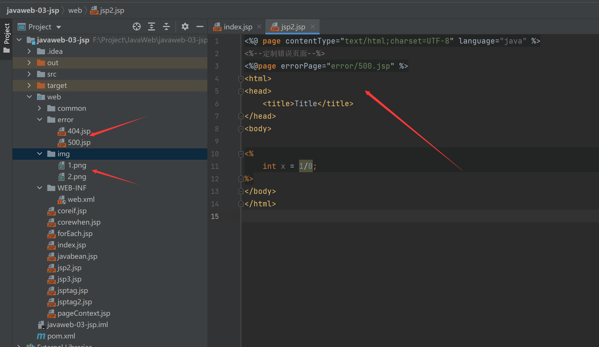
1 2 3 4 5 6 7 8 9 10 11 12 13 14 <%@ page contentType="text/html;charset=UTF-8" language="java" %> <%--定制错误页面--%> <%--<%@page errorPage="error/500.jsp" %>--%> <html> <head> <title>Title</title> </head> <body> <% int x = 1 /0 ; %> </body> </html>
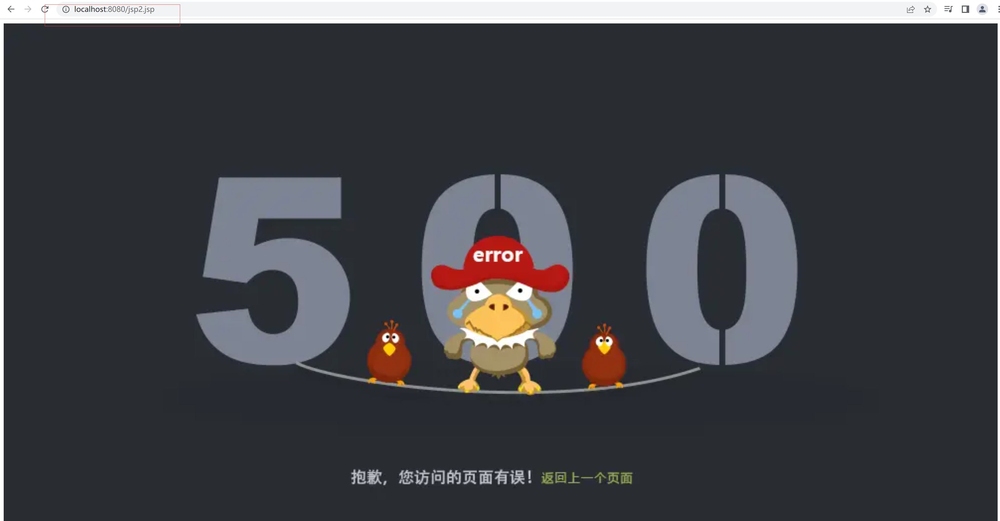
4.JSP指令 1 2 3 4 5 6 7 8 9 10 11 12 13 14 15 16 17 18 19 <%@page args.... %> <%@include file="" %> <%--@include 会将两个页面合二为一--%> <%@include file="common/header.jsp" %> <h1>网页主体</h1> <%@include file="common/footer.jsp" %> <hr> <%--jSP标签 jsp:include：拼接页面，本质还是三个 --%> <jsp:include page="/common/header.jsp" /> <h1>网页主体</h1> <jsp:include page="/common/footer.jsp" />
1 2 3 4 5 6 7 8 9 <%@ page contentType="text/html;charset=UTF-8" language="java" %> <html> <head> <title>Title</title> </head> <body> <h1>我是header</h1> </body> </html>
1 2 3 4 5 6 7 8 9 <%@ page contentType="text/html;charset=UTF-8" language="java" %> <html> <head> <title>Title</title> </head> <body> <h1>我是header</h1> </body> </html>
1 2 3 4 5 6 7 8 9 10 11 12 13 14 15 <%@ page contentType="text/html;charset=UTF-8" language="java" %> <html> <head> <title>Title</title> </head> <body> <%@include file="common/header.jsp" %> <h1>网页主体</h1> <%@include file="common/footer.jsp" %> <jsp:include page="common/header.jsp" /> <h1>网页主体</h1> <jsp:include page="common/footer.jsp" /> </body> </html>
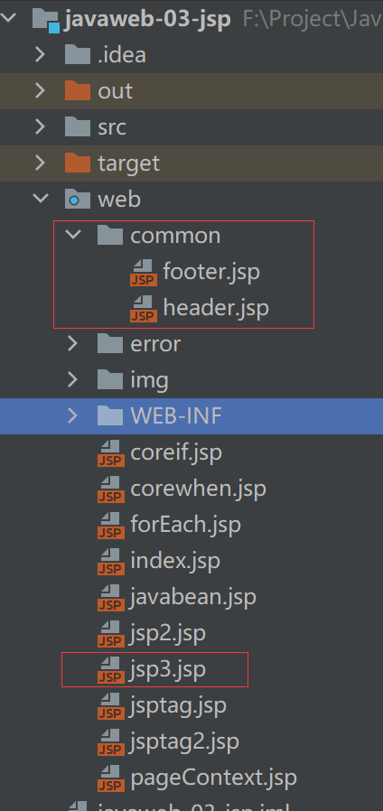
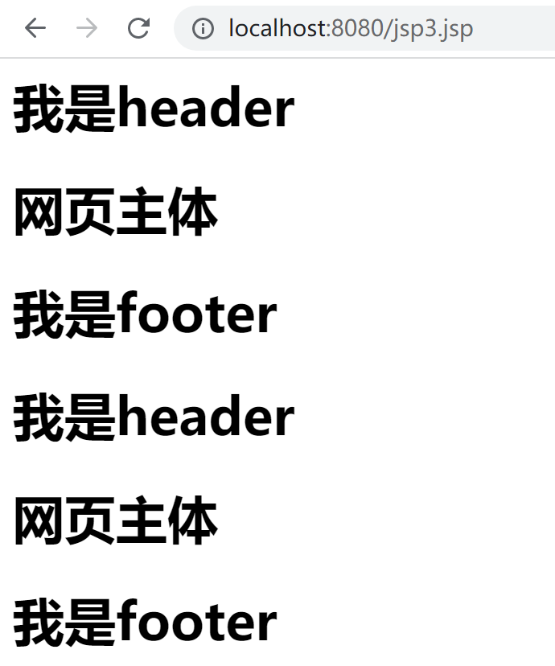
5.9大内置对象
PageContext 存东西
Request 存东西
Response
Session 存东西
Application 【SerlvetContext】 存东西
config 【SerlvetConfig】
out
page ，不用了解
exception
1 2 3 4 pageContext.setAttribute("name1" ,"yty1" ); request.setAttribute("name1" ,"yty2" ); session.setAttribute("name1" ,"yty3" ); application.setAttribute("name1" ,"yty4" );
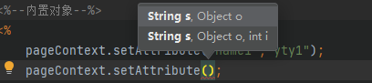
1 2 3 4 5 6 7 8 9 10 11 12 13 14 15 16 17 18 19 20 21 public void setAttribute (String name, Object attribute, int scope) { switch (scope) { case PAGE_SCOPE: mPage.put (name, attribute); break ; case REQUEST_SCOPE: mRequest.put (name, attribute); break ; case SESSION_SCOPE: mSession.put (name, attribute); break ; case APPLICATION_SCOPE: mApp.put (name, attribute); break ; default : throw new IllegalArgumentException ("Bad scope " + scope); } }
1 2 3 pageContext.setAttribute("name1" ,"yty1" ); ===================等价于======================= pageContext.setAttribute("name1" ,"yty1" ,1 );
1 2 3 4 5 6 7 8 9 10 11 12 13 14 15 16 17 18 19 20 21 22 23 24 25 26 27 28 29 30 31 <%@ page contentType="text/html;charset=UTF-8" language="java" %> <html> <head> <title>Title</title> </head> <body> <%--内置对象--%> <% pageContext.setAttribute("name1" ,"yty1" ); request.setAttribute("name2" ,"yty2" ); session.setAttribute("name3" ,"yty3" ); application.setAttribute("name4" ,"yty4" ); %> <% String name1 = (String) pageContext.findAttribute("name1" ); String name2 = (String) pageContext.findAttribute("name2" ); String name3 = (String) pageContext.findAttribute("name3" ); String name4 = (String) pageContext.findAttribute("name4" ); String name5 = (String) pageContext.findAttribute("name5" ); %> <%--通过EL表达式取值输出--%> <h1>${name1}</h1> <h1>${name2}</h1> <h1>${name3}</h1> <h1>${name4}</h1> <h1><%=name5%></h1><%--null --%> <%--<h1>${name5}</h1>--%> </body> </html>
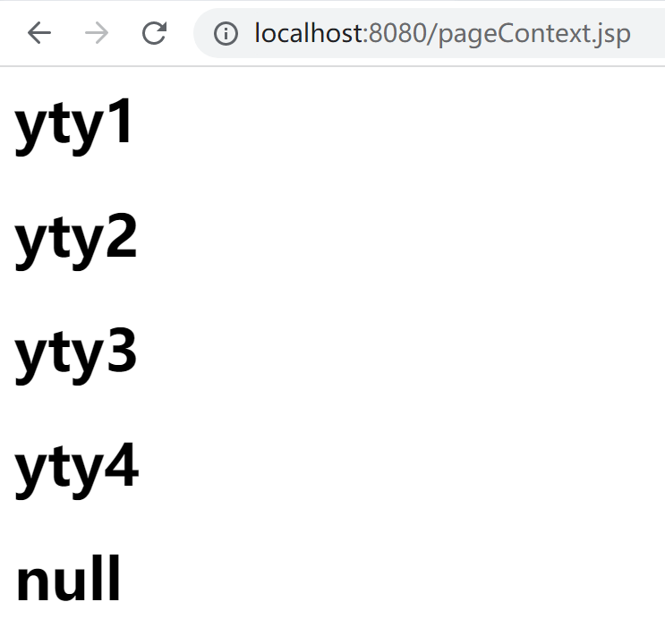
EL表达式与<% =%>区别
1 2 3 ${}：会自动过滤掉不存在的值 <%= %>: 不会自动过滤掉不存在的值，如果不存在，则null
request：客户端向服务器发送请求，产生的数据，用户看完就没用了，比如：新闻，用户看完没用的！
session：客户端向服务器发送请求，产生的数据，用户用完一会还有用，比如：购物车；
application：客户端向服务器发送请求，产生的数据，一个用户用完了，其他用户还可能使用，比如：聊天数据；
补充
1 2 3 4 5 6 7 8 9 10 11 12 13 <%@ page contentType="text/html;charset=UTF-8" language="java" %> <html> <head> <title>Title</title> </head> <body> <% pageContext.forward("/index.jsp" ); %> </body> </html>
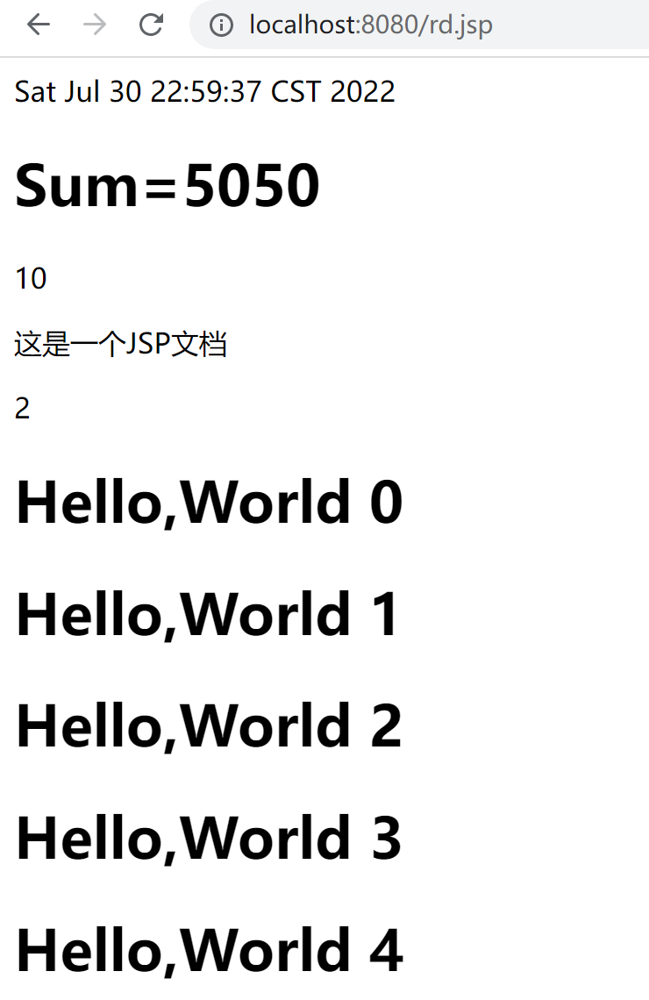
6.JSP标签、JSTL标签、EL表达式 1 2 3 4 5 6 7 8 9 10 11 12 <dependency > <groupId > javax.servlet.jsp.jstl</groupId > <artifactId > jstl-api</artifactId > <version > 1.2</version > </dependency > <dependency > <groupId > taglibs</groupId > <artifactId > standard</artifactId > <version > 1.1.2</version > </dependency >
6.1 EL表达式： ${ }
获取数据 执行运算 获取web开发的常用对象 调用java方法
6.2 JSP标签 1 2 3 4 5 6 7 8 9 10 11 12 13 14 15 16 17 18 19 20 21 22 23 24 25 26 27 28 29 30 31 32 33 34 35 36 37 ===========================jsp:include：拼接页面，本质还是三个=============================== <jsp:include page="common/header.jsp" /> <h1>网页主体</h1> <jsp:include page="common/footer.jsp" /> ===================================jsp:forward:请求转发================================== ===================================jsp:param:携带参数==================================== <%--jsptag.jsp--%> <%@ page contentType="text/html;charset=UTF-8" language="java" %> <html> <head> <title>Title</title> </head> <body> <jsp:forward page="/jsptag2.jsp" > <jsp:param name="name" value="yty" /> <jsp:param name="age" value="18" /> </jsp:forward> </body> </html> <%-- http: --%> <%--jsptag2.jsp--%> <%@ page contentType="text/html;charset=UTF-8" language="java" %> <html> <head> <title>Title</title> </head> <body> <%--取出参数--%> name:<%=request.getParameter("name" )%><br/> age:<%=request.getParameter("age" )%> </body> </html>
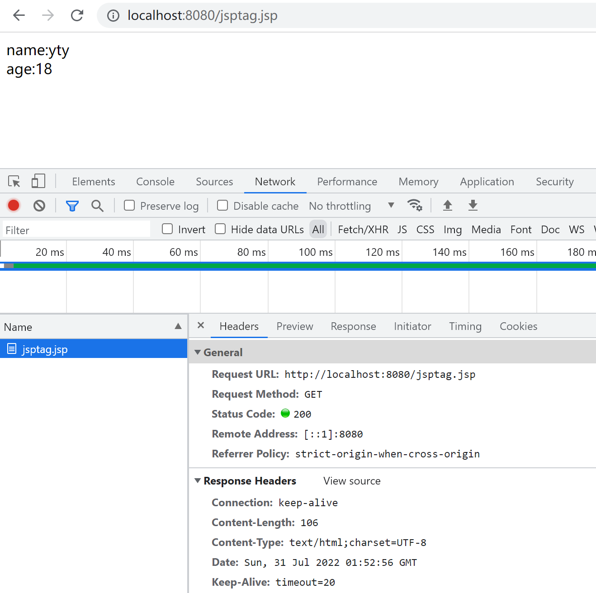
6.3 JSTL表达式 菜鸟教程：https://www.runoob.com/jsp/jsp-jstl.html
JSTL标签库的使用就是为了弥补HTML标签的不足；它自定义许多标签，可以供我们使用，标签的功能和Java代码一样！
格式化标签
SQL标签
XML 标签
核心标签 （掌握部分）
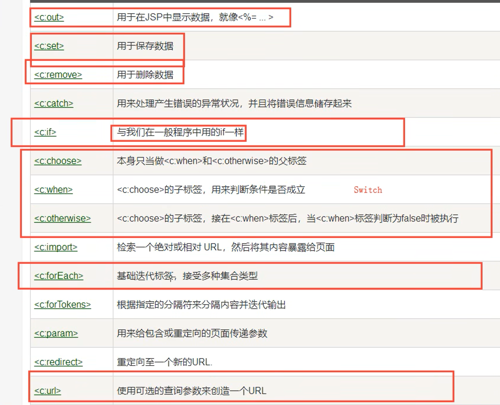
6.4 JSTL标签库使用步骤
1 2 <%--引入JSTL核心标签库，才能使用JSTL标签--%> <%@taglib prefix="c" uri="http://java.sun.com/jsp/jstl/core" %>
使用其中的方法
在Tomcat 也需要引入 jstl的包，否则会报错：JSTL解析错误
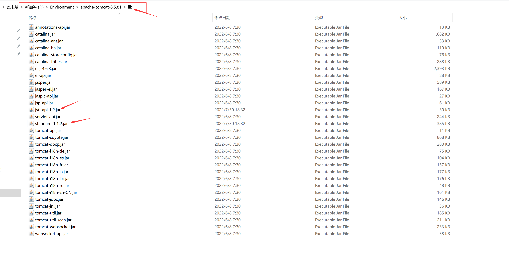
c：if
1 2 3 4 5 6 7 8 9 10 11 12 13 14 15 16 17 18 19 20 21 22 23 24 25 26 27 28 29 30 31 32 33 <%@ page contentType="text/html;charset=UTF-8" language="java" %> <%--引入JSTL核心标签库，才能使用JSTL标签--%> <%@taglib prefix="c" uri="http://java.sun.com/jsp/jstl/core" %> <html> <head> <title>Title</title> </head> <body> <h4>if 测试</h4> <hr> <form action="coreif.jsp" method="get" > <%-- EL表达式获取表单中的数据 ${param.参数名} --%> <input type="text" name="username" value="${param.username}" > <input type="submit" value="登录" > </form> <%--判断如果提交的用户名是管理员，则登录成功--%> <c:if test="${param.username.equals('admin')}" var ="isAdmin" > <c:out value="管理员欢迎您！" /> </c:if > <c:if test="${param.username.equals('admin')}" var ="isAdmin" > <c:out value="管理员欢迎您！" /> </c:if > <%--自闭合标签--%> <c:out value="${isAdmin}" /> </body> </html>
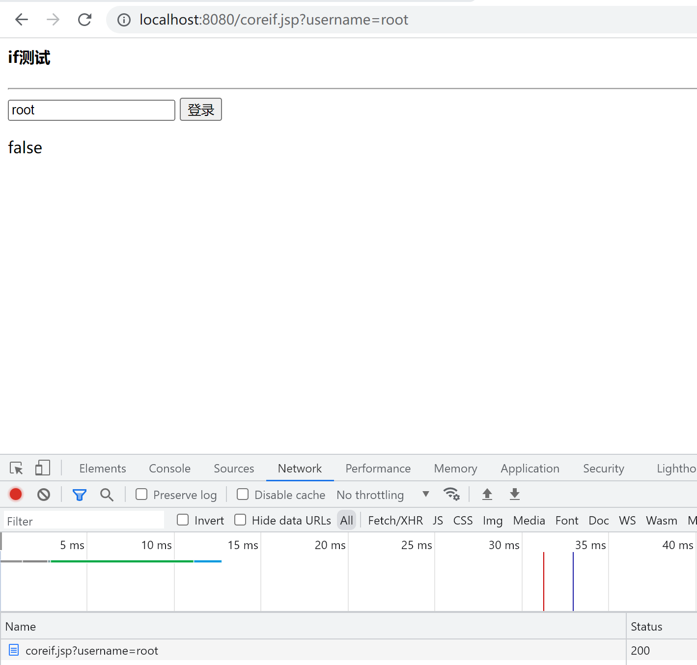
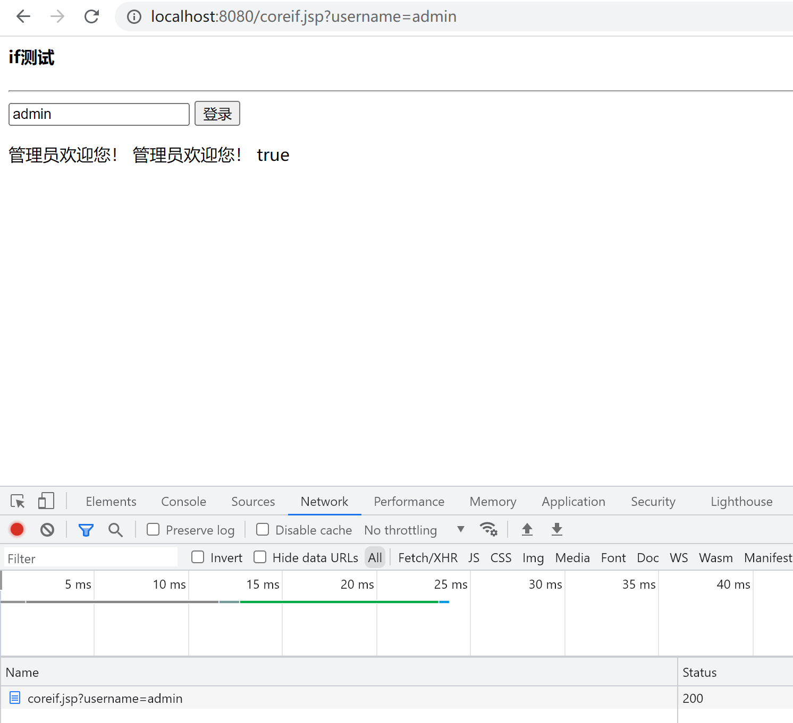
c:choose c:when c:set
1 2 3 4 5 6 7 8 9 10 11 12 13 14 15 16 17 18 19 20 21 22 23 24 25 26 27 28 <%--引入JSTL核心标签库，才能使用JSTL标签--%> <%@taglib prefix="c" uri="http://java.sun.com/jsp/jstl/core" %> <%@ page contentType="text/html;charset=UTF-8" language="java" %> <html> <head> <title>Title</title> </head> <body> <%--定义一个变量score，值为85 --%> <c:set var ="score" value="55" /> <c:choose> <c:when test="${score>=90}" > 你的成绩为优秀 </c:when> <c:when test="${score>=80}" > 你的成绩为一般 </c:when> <c:when test="${score>=70}" > 你的成绩为良好 </c:when> <c:when test="${score<=60}" > 你的成绩为不及格 </c:when> </c:choose> </body> </html>
c:forEach
1 2 3 4 5 6 7 8 9 10 11 12 13 14 15 16 17 18 19 20 21 22 23 24 25 26 27 28 29 30 31 32 33 34 35 36 37 38 39 <%@ page import ="java.util.ArrayList" %> <%--引入JSTL核心标签库，才能使用JSTL标签--%> <%@taglib prefix="c" uri="http://java.sun.com/jsp/jstl/core" %> <%@ page contentType="text/html;charset=UTF-8" language="java" %> <html> <head> <title>Title</title> </head> <body> <% ArrayList<String> people = new ArrayList <>(); people.add(0 ,"张三" ); people.add(1 ,"李四" ); people.add(2 ,"王五" ); people.add(3 ,"赵六" ); people.add(4 ,"田六" ); request.setAttribute("list" ,people); %> <%-- var , 每一次遍历出来的变量items, 要遍历的对象 begin, 哪里开始 end, 到哪里 step, 步长 --%> <c:forEach var ="people" items="${list}" > <c:out value="${people}" /> <br> </c:forEach> <hr> <c:forEach var ="people" items="${list}" begin="1" end="3" step="1" > <c:out value="${people}" /> <br> </c:forEach> </body> </html>